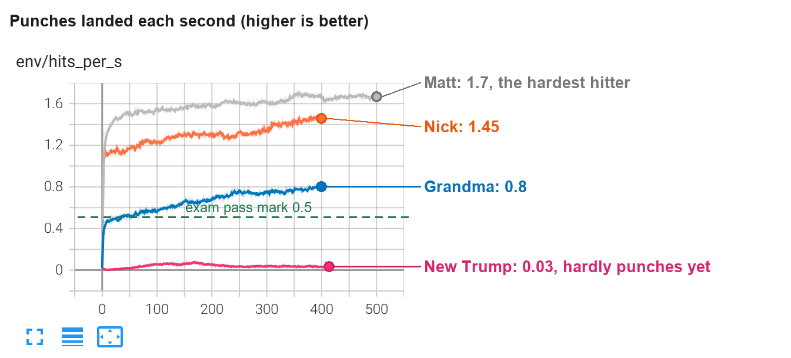
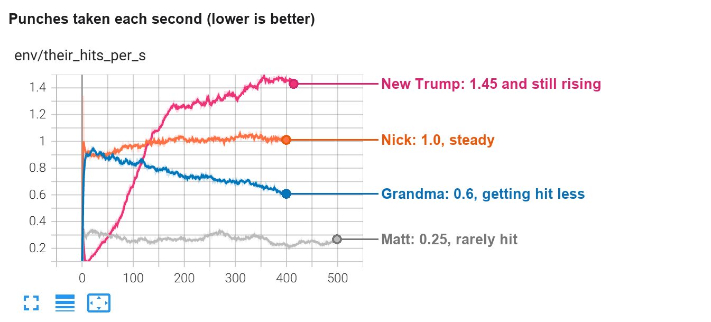
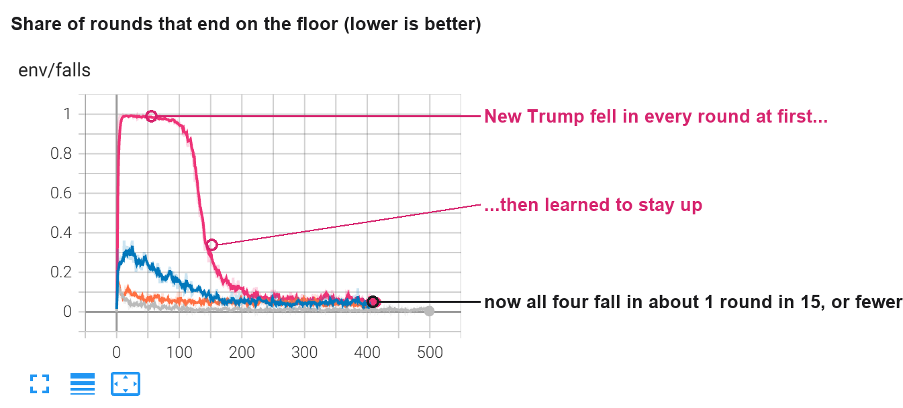

What each boxer can do
3 October 2026, 16:00 · six boxers, nine behaviours · every cell is an exam result (30 tries or four 45-second rounds per opponent, no random wobble)
The grid
The thin bar in each cell is how good the boxer is at that behaviour, from worst (empty) to best (full). Grandma and Grandpa are marked against easier targets for punching speed and getting up, because their bodies are built weaker and slower. Lil Matt and the old Trump were taken out of the game this morning and are not shown.
How far up the ladder each boxer is
One block per behaviour, in the grid's order: stand, walk, turn, get up, attack, guard, chin, footing, carry on.
Giving and taking: punches a second in the exam
■ punches landed ■ head shots taken. A good boxer has a long green bar and a short red one. Matt hits most and is almost never hit in the head; Trump does neither.
What is still wrong, in plain words
- Trump does not punch. In his first boxing lesson he learned to stay on his feet and keep his gloves up, and nothing else: 0.00 punches landed a second in the exam. The boxing brain he started from belonged to the old Trump's body, which had longer legs, so the punching did not carry over. He is now practising on a punch bag (
bag_trump2) before boxing people again. - Matt, Grandma, Grandpa, Trump: wobbly after getting up. They get off the floor nearly every time, but when the fighting brain takes the body back from the getting-up brain they fall again: Trump in 13 tries of 30, the others in up to 1 try in 4. Nick's second round of practice fixed exactly this.
- Grandpa: falls without being hit. About twice a minute against his worst opponent. His second round of practice has still not run.
- Matt never blocks. He passes the guard test only because opponents rarely reach his head. All his own punches go to the body.
- The human rules. Trump's footwork was trained with the muscle speed limit. His boxing lesson (
m3_trump) ran with the speed limit and fatigue switched off, and no other boxer has trained under either yet (task D8).
The latest lesson: three charts from TensorBoard
Run m3_trump, the new Trump's first boxing lesson against Matt, Zombie, Nick, Grandma and Grandpa: 415 rounds of practice, 19 minutes, 15:32 to 15:51. The other three lines are this morning's second boxing lessons for Matt, Nick and Grandma. Left to right is practice time. These are training numbers, with deliberate random wobble, so they sit a little worse than the exam.
1. Punches landed

- Toddler
- How many times the boxer bops the other one. Up is good. Trump's pink line is lying on the floor: no bops.
- Child
- Matt lands almost two punches every second, Nick about one and a half, Grandma nearly one. Trump lands one punch every half minute. The green dashed line is what you need to pass, and he is far under it.
- Adult
- Clean punches landed per second, averaged over all opponents. The three earlier runs start high because they resumed from brains that already boxed on the same body, and each climbed further. Trump's stays at 0.03 for the whole run: the reward for standing and guarding was easier to collect than the reward for hitting, so that is what he learned.
2. Punches taken

- Toddler
- How many times the boxer gets bopped. Down is good. Trump's line goes up, which is bad.
- Child
- At the start Trump kept falling over, and you cannot punch someone who is on the floor. Once he learned to stand, the others could reach him, so he gets hit more and more. Grandma is the opposite: she gets hit less as she practises.
- Adult
- Punches landed on the learner per second, anywhere on the body. Trump's rise from 0.2 to 1.45 is mostly a side effect of staying upright, and nearly all of it is to the body: the exam shows only 0.02 head shots a second getting through, because his guard stops about half of them. Still, a boxer who never hits back gets hit without limit.
3. Falling down

- Toddler
- How often the boxer ends up on the floor. Down is good. Trump's line starts at the very top and slides down like a slide!
- Child
- For the first hundred rounds of practice Trump fell over every single time. Then it clicked, and now he falls about 1 time in 15, the same as the others.
- Adult
- Share of 12-second episodes that end with the learner down. Trump's plateau at 1.0 is the old body's boxing brain failing on the new body; the drop between rounds 100 and 200 is it adapting. He ends at 0.07, level with Grandma and Nick, and in the exam he has 0.00 unprovoked falls a minute. This is the one clear success of the run.
Sources: training/logs/exam_*.json (footwork: r2b_matt, f_zombie, f_nick, f2_grandma, f_grandpa, f_trump2; boxing: m2 for Matt, Nick and Grandma, m3 for Trump, the all-boxers exam after round one for Zombie and Grandpa; get-up: the u1 exams). Charts: TensorBoard on port 6006, tags env/hits_per_s, env/their_hits_per_s, env/falls.